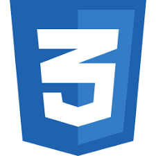

Sobre mim
Me chamo Michel Alisson Barbosa da Silva. Sou brasileiro, natural de Araguari, Minas Gerais.
Tenho 26 anos, casado, Engenheiro de Produção e futuro Licenciado em Computação.
Conto com 8 anos de experiência profissional, sendo eles 5 anos atuando diretamente com planejamento e controle de manutenção, 2 anos atuando
em toda a cadeia de compras de suprimentos de manutenção e produção metalúrgica e 1 ano atuando no desenvolvimento de projetos estruturantes
voltando à gestão de manutenção.
Sempre tive o desejo de conhecer melhor o mundo da tecnologia a fundo porém, somente em meados de Julho/21 consegui focar e traçar como meta
desde então, o aprendizado e quem sabe em um futuro próximo, transacionar de carreira profissional.
Atualmente estou empenhado em participar da formação ONE (Oracle Next Education) em parceria com a Alura e também participado de bootcamps
me outra plataforma de ensino, DIO.
Skills

HTML 5
- 
CSS

JavaScript

Java

Spring Boot

MySql
Hobbies

Cozinhar

Pescar

Estudar programação

Futebol

Trilha de Bike
Assistir TV
Formação acadêmica

Engenharia de Produção
2019 - Centro Universitário UNA
Licenciatura em Computação
Previsão de Formação 2025 - IFTM

Formação ONE + Alura
Previsão de Formação em 2022 - Oracle + Alura